Flowchart, flowgraph, cyclomatic complexity, dan basis path.
test/unit/whitebox_test.dart (nama test diawali ID path); kolom Hasil diisi dari eksekusi nyata.| No | Fungsi | Berkas | N | E | P | V(G)=E−N+2P | Keputusan+1 | Basis path |
|---|---|---|---|---|---|---|---|---|
| 1 | ManpowerCalculator.compute | lib/core/domain/calculators.dart:101 | 3 | 2 | 1 | 1 | 1 | 1 |
| 2 | DeviationCalculator.percent | lib/core/domain/calculators.dart:120 | 6 | 8 | 1 | 4 | 4 | 4 |
| 3 | DeviationCalculator.needsAttention | lib/core/domain/calculators.dart:125 | 7 | 8 | 1 | 3 | 3 | 3 |
| 4 | ConfigValidator.validate | lib/core/domain/calculators.dart:179 | 12 | 17 | 1 | 7 | 7 | 7 |
| 5 | ActualValidator.validate | lib/core/domain/calculators.dart:208 | 13 | 18 | 1 | 7 | 7 | 7 |
| 6 | roleGuard (RoleGuard go_router) | lib/router.dart:33 | 16 | 25 | 1 | 11 | 11 | 11 |
| 7 | CsvExport._cell | lib/features/riwayat/csv_export.dart:35 | 6 | 7 | 1 | 3 | 3 | 3 |
| 8 | toViewState (penentuan state layar) | lib/core/state/view_state.dart:34 | 11 | 15 | 1 | 6 | 6 | 6 |
Total basis path: 42; lulus otomatis: 41; belum diuji: 1.
lib/core/domain/calculators.dart baris 101 101 static ManpowerCounts compute(num predicted, CapacityConfig c) {
102 final p = predicted.toDouble();
103 return ManpowerCounts(
104 rider: _ceil(p * c.ratioRider / c.capacityRider),
105 driver: _ceil(p * c.ratioDriver / c.capacityDriver),
106 opInbound: _ceil(p / c.capacityOpInbound),
107 opOutbound: _ceil(p / c.capacityOpOutbound),
108 );
109 }
@startuml wb_01_mp_flowchart start :p = predicted.toDouble(); :rider = _ceil(p × ratioRider / capacityRider) driver = _ceil(p × ratioDriver / capacityDriver) opInbound = _ceil(p / capacityOpInbound) opOutbound = _ceil(p / capacityOpOutbound); :return ManpowerCounts; stop @enduml
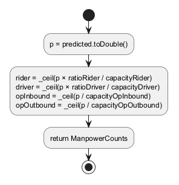
@startuml wb_01_mp_flowgraph skinparam defaultFontName Arial skinparam shadowing false top to bottom direction circle "1" as n1 circle "2" as n2 circle "3" as n3 n1 --> n2 n2 --> n3 legend right 1: p = toDouble 2: 4 × _ceil (tanpa cabang) 3: return endlegend @enduml
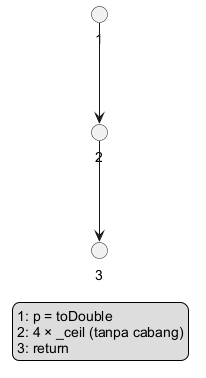
| E (edge) | N (node) | P (komponen) | V(G) = E − N + 2P | Jumlah keputusan + 1 |
|---|---|---|---|---|
| 2 | 3 | 1 | 2 − 3 + 2 = 1 | 0 + 1 = 1 |
Edge: 1→2, 2→3.
| ID | Jalur | Input | Hasil yang diharapkan | Test otomatis | Hasil | Status |
|---|---|---|---|---|---|---|
| WB-MP-P1 | 1-2-3 | predicted 18.420, kapasitas default | 37 / 7 / 37 / 31 | ManpowerCalculator.compute WB-MP-P1 sequential path: 18.420 → 37/7/37/31 | Sesuai harapan (test otomatis) | Lulus |
lib/core/domain/calculators.dart baris 120 120 static double? percent(num? predicted, num? projection) {
121 if (predicted == null || projection == null || projection <= 0) return null;
122 return (predicted - projection) / projection * 100;
123 }
@startuml wb_02_dp_flowchart start if (predicted == null?) then (ya) :return null; stop elseif (projection == null?) then (ya) :return null; stop elseif (projection <= 0?) then (ya) :return null; stop else (tidak) :return (predicted − projection) / projection × 100; stop endif @enduml
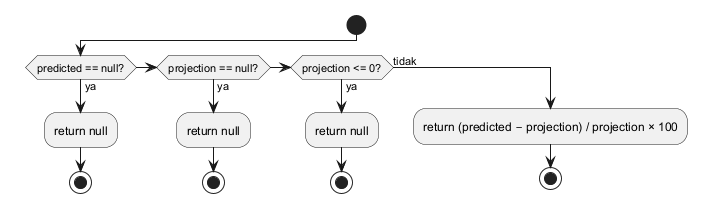
@startuml wb_02_dp_flowgraph skinparam defaultFontName Arial skinparam shadowing false top to bottom direction circle "1" as n1 circle "2" as n2 circle "3" as n3 circle "4" as n4 circle "5" as n5 circle "6" as n6 n1 --> n4 n1 --> n2 n2 --> n4 n2 --> n3 n3 --> n4 n3 --> n5 n4 --> n6 n5 --> n6 legend right 1: predicted == null? 2: projection == null? 3: projection <= 0? 4: return null 5: return deviasi 6: exit endlegend @enduml
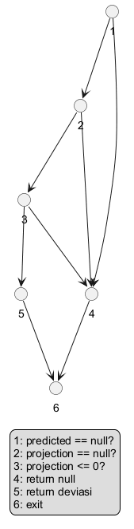
| E (edge) | N (node) | P (komponen) | V(G) = E − N + 2P | Jumlah keputusan + 1 |
|---|---|---|---|---|
| 8 | 6 | 1 | 8 − 6 + 2 = 4 | 3 + 1 = 4 |
Edge: 1→4, 1→2, 2→4, 2→3, 3→4, 3→5, 4→6, 5→6.
| ID | Jalur | Input | Hasil yang diharapkan | Test otomatis | Hasil | Status |
|---|---|---|---|---|---|---|
| WB-DP-P1 | 1-4-6 | predicted null, projection 15.900 | null | DeviationCalculator.percent WB-DP-P1 predicted null → null | Sesuai harapan (test otomatis) | Lulus |
| WB-DP-P2 | 1-2-4-6 | predicted 18.420, projection null | null | DeviationCalculator.percent WB-DP-P2 projection null → null | Sesuai harapan (test otomatis) | Lulus |
| WB-DP-P3 | 1-2-3-4-6 | projection 0 | null | DeviationCalculator.percent WB-DP-P3 projection ≤ 0 → null | Sesuai harapan (test otomatis) | Lulus |
| WB-DP-P4 | 1-2-3-5-6 | 18.420 vs 15.900 | 15,85 | DeviationCalculator.percent WB-DP-P4 valid → 15,85 | Sesuai harapan (test otomatis) | Lulus |
lib/core/domain/calculators.dart baris 125 125 static bool needsAttention(double? deviationPct) {
126 if (deviationPct == null) return false;
127 // Round to 4 decimals to avoid flagging 15.000000001 caused by float math.
128 final v = (deviationPct.abs() * 10000).roundToDouble() / 10000;
129 return v > thresholdPct;
130 }
@startuml wb_03_dn_flowchart
start
if (deviationPct == null?) then (ya)
:return false;
stop
else (tidak)
:v = |deviationPct| dibulatkan 4 desimal;
if (v > 15?) then (ya)
:return true;
else (tidak)
:return false;
endif
stop
endif
@enduml
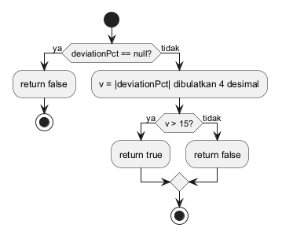
@startuml wb_03_dn_flowgraph skinparam defaultFontName Arial skinparam shadowing false top to bottom direction circle "1" as n1 circle "2" as n2 circle "3" as n3 circle "4" as n4 circle "5" as n5 circle "6" as n6 circle "7" as n7 n1 --> n2 n1 --> n3 n3 --> n4 n4 --> n5 n4 --> n6 n2 --> n7 n5 --> n7 n6 --> n7 legend right 1: null? 2: return false 3: v = round(|d|) 4: v > 15? 5: return true 6: return false 7: exit endlegend @enduml
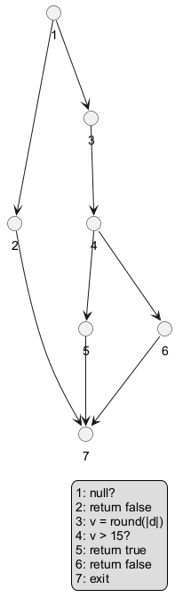
| E (edge) | N (node) | P (komponen) | V(G) = E − N + 2P | Jumlah keputusan + 1 |
|---|---|---|---|---|
| 8 | 7 | 1 | 8 − 7 + 2 = 3 | 2 + 1 = 3 |
Edge: 1→2, 1→3, 3→4, 4→5, 4→6, 2→7, 5→7, 6→7.
| ID | Jalur | Input | Hasil yang diharapkan | Test otomatis | Hasil | Status |
|---|---|---|---|---|---|---|
| WB-DN-P1 | 1-2-7 | null | false | DeviationCalculator.needsAttention WB-DN-P1 null → false | Sesuai harapan (test otomatis) | Lulus |
| WB-DN-P2 | 1-3-4-6-7 | 15,0 | false | DeviationCalculator.needsAttention WB-DN-P2 exactly 15 → false | Sesuai harapan (test otomatis) | Lulus |
| WB-DN-P3 | 1-3-4-5-7 | 15,8 | true | DeviationCalculator.needsAttention WB-DN-P3 15,8 → true | Sesuai harapan (test otomatis) | Lulus |
lib/core/domain/calculators.dart baris 179 179 static ConfigValidation validate(Map<String, num?> values) {
180 final errors = <String, String>{};
181 values.forEach((key, v) {
182 if (v == null) {
183 errors[key] = msgEmpty;
184 } else if (v <= 0) {
185 errors[key] = msgPositive;
186 }
187 });
188 String? ratioError;
189 final rr = values['ratio_rider'];
190 final rd = values['ratio_driver'];
191 if (rr != null && rd != null) {
192 final sum = rr + rd;
193 if ((sum - 1.0).abs() > ratioTolerance) ratioError = msgRatio(sum.toDouble());
194 }
195 return ConfigValidation(errors, ratioError);
196 }
197 }
@startuml wb_04_cv_flowchart
start
:errors = {};
while (masih ada entri values?) is (ya)
if (v == null?) then (ya)
:errors[key] = "Wajib diisi dengan angka.";
elseif (v <= 0?) then (ya)
:errors[key] = "Nilai harus lebih dari 0.";
else (tidak)
endif
endwhile (tidak)
if (ratio_rider != null?) then (ya)
if (ratio_driver != null?) then (ya)
if (|rr + rd − 1| > 0,001?) then (ya)
:ratioError = msgRatio(sum);
endif
endif
endif
:return ConfigValidation(errors, ratioError);
stop
@enduml
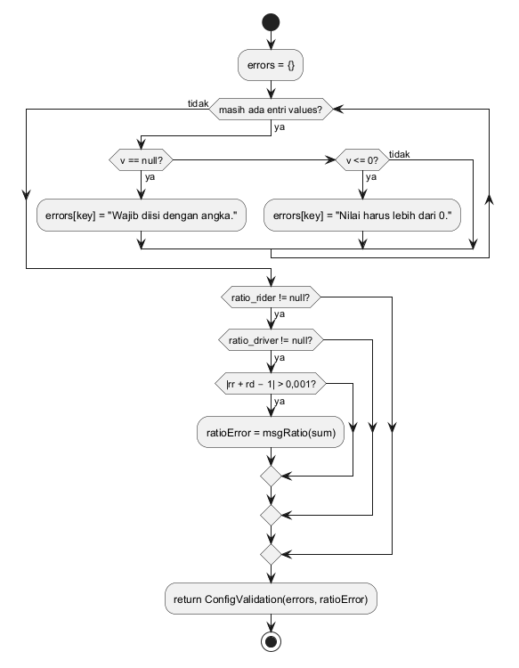
@startuml wb_04_cv_flowgraph
skinparam defaultFontName Arial
skinparam shadowing false
top to bottom direction
circle "1" as n1
circle "2" as n2
circle "3" as n3
circle "4" as n4
circle "5" as n5
circle "6" as n6
circle "7" as n7
circle "8" as n8
circle "9" as n9
circle "10" as n10
circle "11" as n11
circle "12" as n12
n1 --> n2
n2 --> n3
n2 --> n8
n3 --> n4
n3 --> n5
n4 --> n7
n5 --> n6
n5 --> n7
n6 --> n7
n7 --> n2
n8 --> n9
n8 --> n12
n9 --> n10
n9 --> n12
n10 --> n11
n10 --> n12
n11 --> n12
legend right
1: errors = {}
2: ada entri?
3: v == null?
4: err kosong
5: v <= 0?
6: err > 0
7: lanjut
8: rr != null?
9: rd != null?
10: |sum−1| > tol?
11: ratioError
12: return
endlegend
@enduml
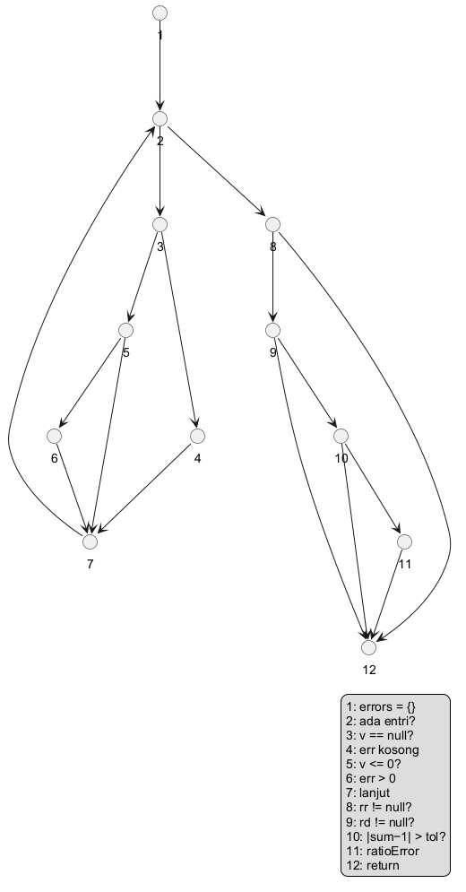
| E (edge) | N (node) | P (komponen) | V(G) = E − N + 2P | Jumlah keputusan + 1 |
|---|---|---|---|---|
| 17 | 12 | 1 | 17 − 12 + 2 = 7 | 6 + 1 = 7 |
Edge: 1→2, 2→3, 2→8, 3→4, 3→5, 4→7, 5→6, 5→7, 6→7, 7→2, 8→9, 8→12, 9→10, 9→12, 10→11, 10→12, 11→12.
| ID | Jalur | Input | Hasil yang diharapkan | Test otomatis | Hasil | Status |
|---|---|---|---|---|---|---|
| WB-CV-P1 | 1-2-8-12 | {} | valid | ConfigValidator.validate WB-CV-P1 empty map: loop skipped, no ratio → valid | Sesuai harapan (test otomatis) | Lulus |
| WB-CV-P2 | 1-2-3-4-7-2-8-12 | capacity_rider = null | "Wajib diisi dengan angka." | ConfigValidator.validate WB-CV-P2 null value → "Wajib diisi" | Sesuai harapan (test otomatis) | Lulus |
| WB-CV-P3 | 1-2-3-5-6-7-2-8-12 | capacity_rider = 0 | "Nilai harus lebih dari 0." | ConfigValidator.validate WB-CV-P3 value ≤ 0 → "Nilai harus lebih dari 0." | Sesuai harapan (test otomatis) | Lulus |
| WB-CV-P4 | 1-2-3-5-7-2-8-12 | capacity_rider = 350 | valid | ConfigValidator.validate WB-CV-P4 positive value, ratio_rider missing → valid | Sesuai harapan (test otomatis) | Lulus |
| WB-CV-P5 | 1-2-3-5-7-2-8-9-12 | ratio_rider = 0,7 saja | tanpa galat rasio | ConfigValidator.validate WB-CV-P5 ratio_rider present, ratio_driver missing → no ratio check | Sesuai harapan (test otomatis) | Lulus |
| WB-CV-P6 | 1-2-…-8-9-10-12 | 350/800/500/600, 0,70/0,30 | valid | ConfigValidator.validate WB-CV-P6 ratios sum to 1,00 → valid | Sesuai harapan (test otomatis) | Lulus |
| WB-CV-P7 | 1-2-…-8-9-10-11-12 | ratio 0,60 + 0,30 | "…harus = 1,00 (saat ini 0,90)." | ConfigValidator.validate WB-CV-P7 ratios 0,60 + 0,30 → ratio error | Sesuai harapan (test otomatis) | Lulus |
lib/core/domain/calculators.dart baris 208 208 static String? validate(String text) {
209 final t = text.trim();
210 if (t.isEmpty) return msgEmpty;
211 if (t.startsWith('-') || t.startsWith('−')) return msgNegative;
212 if (!RegExp(r'^[0-9.]+$').hasMatch(t)) return msgNotInteger;
213 final cleaned = t.replaceAll('.', '');
214 if (cleaned.isEmpty || int.tryParse(cleaned) == null) return msgNotInteger;
215 return null;
@startuml wb_05_av_flowchart
start
:t = text.trim();
if (t kosong?) then (ya)
:return "Actual inbound wajib diisi.";
stop
elseif (diawali "-" atau "−"?) then (ya)
:return "Nilai tidak boleh negatif.";
stop
elseif (bukan pola [0-9.]+?) then (ya)
:return "Masukkan angka bulat…";
stop
else (tidak)
:cleaned = hapus titik;
if (cleaned kosong atau tryParse null?) then (ya)
:return "Masukkan angka bulat…";
else (tidak)
:return null (valid);
endif
stop
endif
@enduml
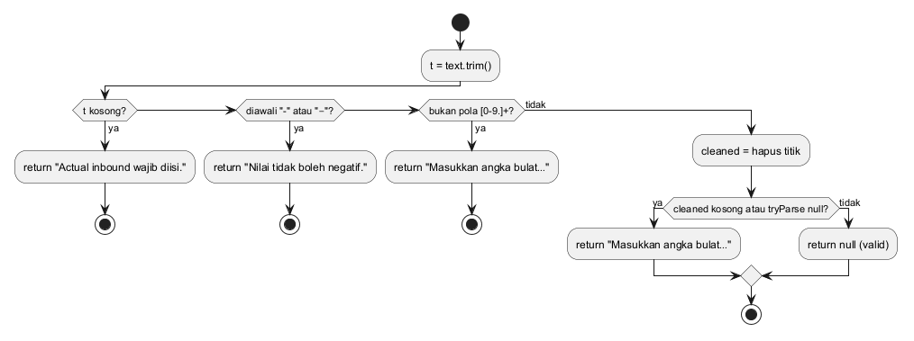
@startuml wb_05_av_flowgraph skinparam defaultFontName Arial skinparam shadowing false top to bottom direction circle "1" as n1 circle "2" as n2 circle "3" as n3 circle "4" as n4 circle "5" as n5 circle "6" as n6 circle "7" as n7 circle "8" as n8 circle "9" as n9 circle "10" as n10 circle "11" as n11 circle "12" as n12 circle "13" as n13 n1 --> n2 n2 --> n3 n2 --> n4 n4 --> n6 n4 --> n5 n5 --> n6 n5 --> n7 n7 --> n8 n7 --> n9 n9 --> n11 n9 --> n10 n10 --> n11 n10 --> n12 n3 --> n13 n6 --> n13 n8 --> n13 n11 --> n13 n12 --> n13 legend right 1: trim 2: kosong? 3: ret wajib 4: '-'? 5: '−'? 6: ret negatif 7: pola? 8: ret bulat 9: cleaned kosong? 10: tryParse null? 11: ret bulat 12: ret null 13: exit endlegend @enduml
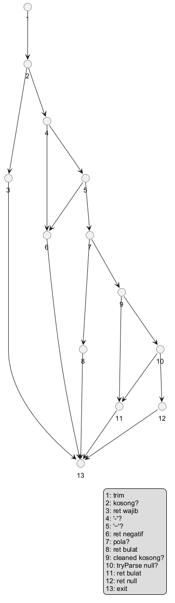
| E (edge) | N (node) | P (komponen) | V(G) = E − N + 2P | Jumlah keputusan + 1 |
|---|---|---|---|---|
| 18 | 13 | 1 | 18 − 13 + 2 = 7 | 6 + 1 = 7 |
Edge: 1→2, 2→3, 2→4, 4→6, 4→5, 5→6, 5→7, 7→8, 7→9, 9→11, 9→10, 10→11, 10→12, 3→13, 6→13, 8→13, 11→13, 12→13.
| ID | Jalur | Input | Hasil yang diharapkan | Test otomatis | Hasil | Status |
|---|---|---|---|---|---|---|
| WB-AV-P1 | 1-2-3-13 | " " | wajib diisi | ActualValidator.validate WB-AV-P1 empty → wajib diisi | Sesuai harapan (test otomatis) | Lulus |
| WB-AV-P2 | 1-2-4-6-13 | -5 | negatif | ActualValidator.validate WB-AV-P2 "-5" → negatif | Sesuai harapan (test otomatis) | Lulus |
| WB-AV-P3 | 1-2-4-5-6-13 | −5 | negatif | ActualValidator.validate WB-AV-P3 "−5" (minus sign) → negatif | Sesuai harapan (test otomatis) | Lulus |
| WB-AV-P4 | 1-2-4-5-7-8-13 | 17,5 | angka bulat | ActualValidator.validate WB-AV-P4 "17,5" → bukan angka bulat | Sesuai harapan (test otomatis) | Lulus |
| WB-AV-P5 | 1-2-4-5-7-9-11-13 | . | angka bulat | ActualValidator.validate WB-AV-P5 "." → kosong setelah dibersihkan | Sesuai harapan (test otomatis) | Lulus |
| WB-AV-P6 | 1-2-4-5-7-9-10-11-13 | 99999999999999999999999 | angka bulat | ActualValidator.validate WB-AV-P6 angka melampaui int64 → bukan angka bulat | Sesuai harapan (test otomatis) | Lulus |
| WB-AV-P7 | 1-2-4-5-7-9-10-12-13 | 17.560 | null (valid) | ActualValidator.validate WB-AV-P7 "17.560" → valid | Sesuai harapan (test otomatis) | Lulus |
lib/router.dart baris 33 33 String? roleGuard(AuthState auth, Uri uri) {
34 final path = uri.path;
35 if (path == Routes.gallery) return kDebugMode ? null : Routes.splash;
36 if (path == Routes.splash) return null;
37 switch (auth.status) {
38 case AuthStatus.unknown:
39 return Routes.splash;
40 case AuthStatus.signedOut:
41 if (Routes.public.contains(path)) return null;
42 return auth.sessionExpired ? '${Routes.login}?expired=1' : Routes.login;
43 case AuthStatus.signedIn:
44 if (path == Routes.login || path == Routes.forgotPassword) return Routes.beranda;
45 final role = auth.user!.role;
46 return AccessMatrix.canOpen(role, path) ? null : Routes.beranda;
47 }
48 }
@startuml wb_06_rg_flowchart
start
if (path == /dev/gallery?) then (ya)
if (kDebugMode?) then (ya)
:return null;
else (tidak)
:return /splash;
endif
stop
elseif (path == /splash?) then (ya)
:return null;
stop
else (tidak)
switch (auth.status)
case (unknown)
:return /splash;
case (signedOut)
if (rute publik?) then (ya)
:return null;
elseif (sessionExpired?) then (ya)
:return /login?expired=1;
else (tidak)
:return /login;
endif
case (signedIn)
if (path == /login atau /login/lupa?) then (ya)
:return /beranda;
elseif (AccessMatrix.canOpen?) then (ya)
:return null;
else (tidak)
:return /beranda;
endif
endswitch
stop
endif
@enduml
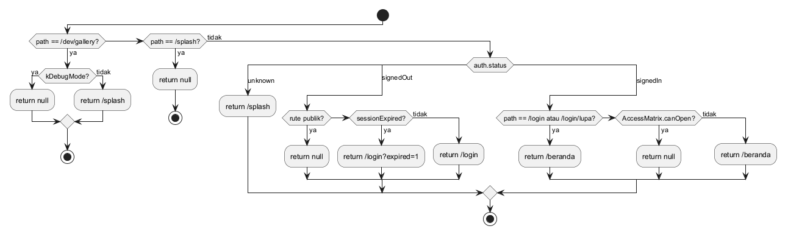
@startuml wb_06_rg_flowgraph skinparam defaultFontName Arial skinparam shadowing false top to bottom direction circle "1" as n1 circle "2" as n2 circle "3" as n3 circle "4" as n4 circle "5" as n5 circle "6" as n6 circle "7" as n7 circle "8" as n8 circle "9" as n9 circle "10" as n10 circle "11" as n11 circle "12" as n12 circle "13" as n13 circle "14" as n14 circle "15" as n15 circle "16" as n16 n1 --> n2 n2 --> n3 n2 --> n6 n3 --> n4 n3 --> n5 n6 --> n4 n6 --> n7 n7 --> n5 n7 --> n8 n7 --> n12 n8 --> n4 n8 --> n9 n9 --> n10 n9 --> n11 n12 --> n15 n12 --> n13 n13 --> n15 n13 --> n14 n14 --> n4 n14 --> n15 n4 --> n16 n5 --> n16 n10 --> n16 n11 --> n16 n15 --> n16 legend right 1: path 2: gallery? 3: kDebugMode? 4: return null 5: return /splash 6: splash? 7: status? 8: publik? 9: expired? 10: /login?expired=1 11: /login 12: == /login? 13: == /login/lupa? 14: canOpen? 15: return /beranda 16: exit endlegend @enduml
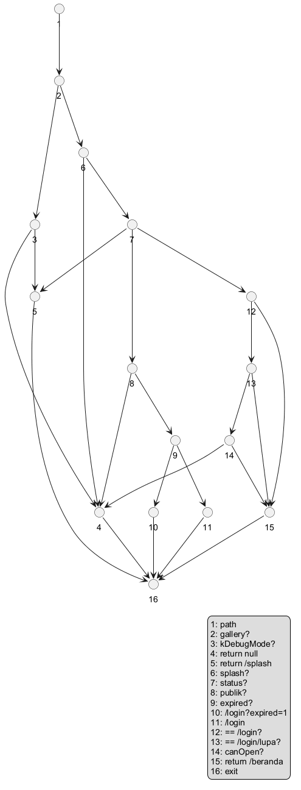
| E (edge) | N (node) | P (komponen) | V(G) = E − N + 2P | Jumlah keputusan + 1 |
|---|---|---|---|---|
| 25 | 16 | 1 | 25 − 16 + 2 = 11 | 10 + 1 = 11 |
Edge: 1→2, 2→3, 2→6, 3→4, 3→5, 6→4, 6→7, 7→5, 7→8, 7→12, 8→4, 8→9, 9→10, 9→11, 12→15, 12→13, 13→15, 13→14, 14→4, 14→15, 4→16, 5→16, 10→16, 11→16, 15→16.
| ID | Jalur | Input | Hasil yang diharapkan | Test otomatis | Hasil | Status |
|---|---|---|---|---|---|---|
| WB-RG-P1 | 1-2-3-4-16 | /dev/gallery (debug) | null | roleGuard WB-RG-P1 /dev/gallery in debug → allowed | Sesuai harapan (test otomatis) | Lulus |
| WB-RG-P2 | 1-2-3-5-16 | /dev/gallery (rilis) | /splash | test belum ada: WB-RG-P2 | — | Belum diuji |
| WB-RG-P3 | 1-2-6-4-16 | /splash | null | roleGuard WB-RG-P3 /splash → allowed | Sesuai harapan (test otomatis) | Lulus |
| WB-RG-P4 | 1-2-6-7-5-16 | unknown, /beranda | /splash | roleGuard WB-RG-P4 unknown session → /splash | Sesuai harapan (test otomatis) | Lulus |
| WB-RG-P5 | 1-2-6-7-8-4-16 | signedOut, /login | null | roleGuard WB-RG-P5 signed out on public route → allowed | Sesuai harapan (test otomatis) | Lulus |
| WB-RG-P6 | 1-2-6-7-8-9-10-16 | signedOut + expired, /beranda | /login?expired=1 | roleGuard WB-RG-P6 signed out, session expired → /login?expired=1 | Sesuai harapan (test otomatis) | Lulus |
| WB-RG-P7 | 1-2-6-7-8-9-11-16 | signedOut, /manpower | /login | roleGuard WB-RG-P7 signed out → /login | Sesuai harapan (test otomatis) | Lulus |
| WB-RG-P8 | 1-2-6-7-12-15-16 | admin, /login | /beranda | roleGuard WB-RG-P8 signed in on /login → /beranda | Sesuai harapan (test otomatis) | Lulus |
| WB-RG-P9 | 1-2-6-7-12-13-15-16 | viewer, /login/lupa | /beranda | roleGuard WB-RG-P9 signed in on /login/lupa → /beranda | Sesuai harapan (test otomatis) | Lulus |
| WB-RG-P10 | 1-2-6-7-12-13-14-4-16 | manajer, /konfigurasi | null | roleGuard WB-RG-P10 allowed route → null | Sesuai harapan (test otomatis) | Lulus |
| WB-RG-P11 | 1-2-6-7-12-13-14-15-16 | viewer, /manpower | /beranda | roleGuard WB-RG-P11 Viewer on /manpower → /beranda | Sesuai harapan (test otomatis) | Lulus |
lib/features/riwayat/csv_export.dart baris 35 35 static String _cell(Object? v) {
36 if (v == null) return '';
37 final s = v.toString();
38 if (s.contains(RegExp(r'[",\r\n]'))) return '"${s.replaceAll('"', '""')}"';
39 return s;
40 }
@startuml wb_07_cs_flowchart
start
if (v == null?) then (ya)
:return "";
else (tidak)
:s = v.toString();
if (s memuat " , CR atau LF?) then (ya)
:return "\"" + s (kutip digandakan) + "\"";
else (tidak)
:return s;
endif
endif
stop
@enduml
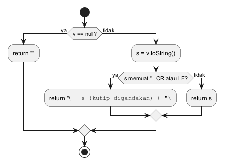
@startuml wb_07_cs_flowgraph skinparam defaultFontName Arial skinparam shadowing false top to bottom direction circle "1" as n1 circle "2" as n2 circle "3" as n3 circle "4" as n4 circle "5" as n5 circle "6" as n6 n1 --> n2 n1 --> n3 n3 --> n4 n3 --> n5 n2 --> n6 n4 --> n6 n5 --> n6 legend right 1: null? 2: return '' 3: perlu kutip? 4: return kutip 5: return s 6: exit endlegend @enduml
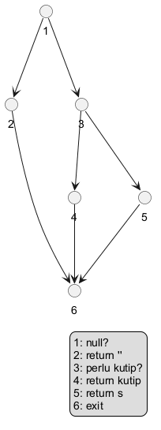
| E (edge) | N (node) | P (komponen) | V(G) = E − N + 2P | Jumlah keputusan + 1 |
|---|---|---|---|---|
| 7 | 6 | 1 | 7 − 6 + 2 = 3 | 2 + 1 = 3 |
Edge: 1→2, 1→3, 3→4, 3→5, 2→6, 4→6, 5→6.
| ID | Jalur | Input | Hasil yang diharapkan | Test otomatis | Hasil | Status |
|---|---|---|---|---|---|---|
| WB-CS-P1 | 1-2-6 | actual null | sel kosong | CsvExport._cell (via build) WB-CS-P1 null value → empty cell | Sesuai harapan (test otomatis) | Lulus |
| WB-CS-P2 | 1-3-5-6 | 17560 | 17560 | CsvExport._cell (via build) WB-CS-P2 plain value → unchanged | Sesuai harapan (test otomatis) | Lulus |
| WB-CS-P3 | 1-3-4-6 | rute "padat", hujan | "rute ""padat"", hujan" | CsvExport._cell (via build) WB-CS-P3 value with comma/quote → quoted and escaped | Sesuai harapan (test otomatis) | Lulus |
lib/core/state/view_state.dart baris 34 34 ViewState<T> toViewState<T>(
35 AsyncValue<T> value, {
36 required bool offline,
37 DateTime? lastSync,
38 bool Function(T data)? isEmpty,
39 }) {
40 if (value.hasValue) {
41 final data = value.requireValue;
42 if (isEmpty != null && isEmpty(data)) {
43 // Nothing cached and nothing to show: still an empty state, the offline
44 // banner is rendered separately by the screen.
45 return ViewEmpty<T>();
46 }
47 if (offline) return ViewOffline<T>(data, lastSync);
48 return ViewData<T>(data);
49 }
50 if (value.hasError) return ViewError<T>(value.error!);
51 return ViewLoading<T>();
52 }
@startuml wb_08_vs_flowchart
start
if (value.hasValue?) then (ya)
if (isEmpty != null dan isEmpty(data)?) then (ya)
:return ViewEmpty;
elseif (offline?) then (ya)
:return ViewOffline(data, lastSync);
else (tidak)
:return ViewData(data);
endif
elseif (value.hasError?) then (ya)
:return ViewError;
else (tidak)
:return ViewLoading;
endif
stop
@enduml
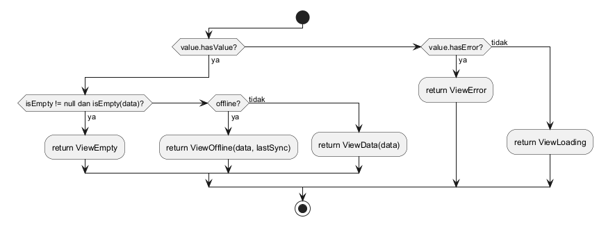
@startuml wb_08_vs_flowgraph skinparam defaultFontName Arial skinparam shadowing false top to bottom direction circle "1" as n1 circle "2" as n2 circle "3" as n3 circle "4" as n4 circle "5" as n5 circle "6" as n6 circle "7" as n7 circle "8" as n8 circle "9" as n9 circle "10" as n10 circle "11" as n11 n1 --> n2 n1 --> n8 n2 --> n3 n2 --> n5 n3 --> n4 n3 --> n5 n5 --> n6 n5 --> n7 n8 --> n9 n8 --> n10 n4 --> n11 n6 --> n11 n7 --> n11 n9 --> n11 n10 --> n11 legend right 1: hasValue? 2: isEmpty != null? 3: isEmpty(data)? 4: Empty 5: offline? 6: Offline 7: Data 8: hasError? 9: Error 10: Loading 11: exit endlegend @enduml
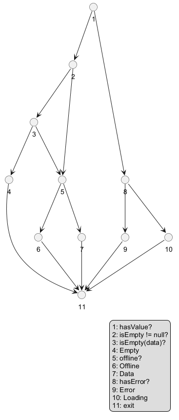
| E (edge) | N (node) | P (komponen) | V(G) = E − N + 2P | Jumlah keputusan + 1 |
|---|---|---|---|---|
| 15 | 11 | 1 | 15 − 11 + 2 = 6 | 5 + 1 = 6 |
Edge: 1→2, 1→8, 2→3, 2→5, 3→4, 3→5, 5→6, 5→7, 8→9, 8→10, 4→11, 6→11, 7→11, 9→11, 10→11.
| ID | Jalur | Input | Hasil yang diharapkan | Test otomatis | Hasil | Status |
|---|---|---|---|---|---|---|
| WB-VS-P1 | 1-8-10-11 | AsyncLoading | ViewLoading | toViewState WB-VS-P1 loading | Sesuai harapan (test otomatis) | Lulus |
| WB-VS-P2 | 1-8-9-11 | AsyncError | ViewError | toViewState WB-VS-P2 error | Sesuai harapan (test otomatis) | Lulus |
| WB-VS-P3 | 1-2-5-7-11 | AsyncData([]), tanpa isEmpty, online | ViewData | toViewState WB-VS-P3 data without isEmpty callback, online | Sesuai harapan (test otomatis) | Lulus |
| WB-VS-P4 | 1-2-3-4-11 | AsyncData([]), isEmpty | ViewEmpty | toViewState WB-VS-P4 data judged empty | Sesuai harapan (test otomatis) | Lulus |
| WB-VS-P5 | 1-2-3-5-6-11 | AsyncData([1]), offline | ViewOffline | toViewState WB-VS-P5 data, offline → Offline with lastSync | Sesuai harapan (test otomatis) | Lulus |
| WB-VS-P6 | 1-2-3-5-7-11 | AsyncData([1]), online | ViewData | toViewState WB-VS-P6 data, online, not empty → Data | Sesuai harapan (test otomatis) | Lulus |
Dibuat oleh tools/gen_test_docs.py. Hasil otomatis diambil dari flutter test --reporter json
(ringkasan: test_results.txt).